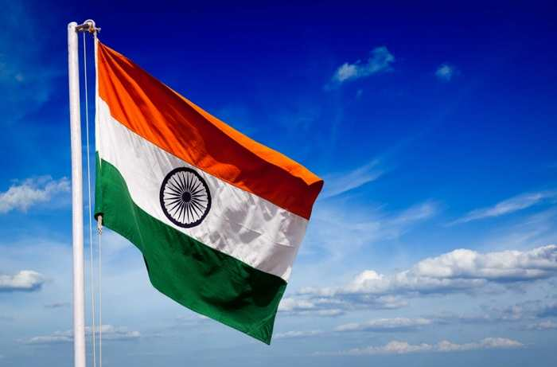

National Flag
- Title : Tricolour / Tiranga
- Colors : Saffron, White and Green; Navy Blue in the Askoka Chakra
- Dimension ratio : 2:3
- Material : Khadi Cotton or Silk
- Adopted on : July 22,1947
- Designed by : Pingali Venkayya
- Manufactured by : Khadi Development and Village Industries Commission
Mahatma Gandhi said, ‘A flag is a necessity for all nations. Millions have died for it. It is no doubt a kind of idolatry which would be a sin to destroy. For, a flag represents an Ideal.’ The national flag is the banner that imparts a nation its own unique identity, proclaims to world of its sovereignty, and announces the principles on which lies the country’s foundation.
The National flag of India is rectangular in shape and consists of three colors – saffron, white and green. The present form of the flag was adopted by the Constituent Assembly of India on 22 July, 1947 - 24 days prior to the formal declaration of Independence.
Design
The rectangular tricolor flag consists of three equal horizontal segments, with saffron on top, white in the middle and green at the bottom. At the center of the white stripe is a depiction of Ashok Chakra in navy blue. It is round hollow wheel and has 24 spokes radiating from the center. The RGB values for referring to the colors of the Indian National flag are India saffron #FF9933, white #FFFFFF, India green #138808, and navy blue #000080. The dimension of the flag should be of 2:3 ratio, i.e. the length should be 1.5 times the breadth. The flag is to be made from Khadi, hand-woven cotton or silk, following the manufacturing protocols laid out by the Bureau of Indian Standards (BIS). The Khadi Development and Village Industries Commission hold the right to manufacture the Indian National flag and as of 2009, the responsibility lies with the Karnataka Khadi Gramodyoga Samyukta Sangha.
Symbolism
The colors and symbols of the Indian National flag hold deep philosophical meaning. Each color represents a specific aspect of Indian culture that resonates deeply within the hearts of the citizens. The saffron stands for sacrifice and renunciation, the white stands for peace and the green stands for courage and immortality. The Ashok Chakra is a depiction of Dharma Chakra. It has 24 spokes radiating from the center. It represents righteousness, justice and forwardness. The symbolism of wheel is that of constant movement that heralds progress and repels stagnation.
Another underlying symbolism of the three colors is based on the secular principles of India as a country. The saffron represents Hinduism, Buddhism and Jainism, the white is for Christianity and the green stands for Islam. The flag as a whole represents a confluence of all religious principles, but above all a philosophy of tolerance and righteousness as depicted by the Ashok Chakra in the middle.
Philosopher and Vice President of India, Dr. Sarvapalli Radha Krishnan put forward to the world the interpretation of the Indian Flag in an eloquent expression, “Bhagwa or the saffron colour denotes renunciation or disinterestedness. Our leaders must be indifferent to material gains and dedicate themselves to their work. The white in the centre is light, the path of truth to guide our conduct. The green shows our relation to (the) soil, our relation to the plant life here, on which all other life depends. The "Ashoka Chakra" in the centre of the white is the wheel of the law of dharma. Truth or satya, dharma or virtue ought to be the controlling principle of those who work under this flag. Again, the wheel denotes motion. There is death in stagnation. There is life in movement. India should no more resist change, it must move and go forward. The wheel represents the dynamism of a peaceful change”
 +91 9917078188
+91 9917078188 mohitpratap51@gmail.com
mohitpratap51@gmail.com www.IndianCulture.com
www.IndianCulture.com